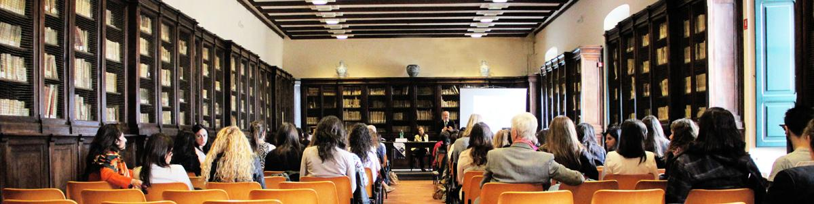

Qué es la FP
La Formación Profesional es un itinerario formativo en el que se capacita para trabajar en una actividad profesional de forma cualificada y que incluye un período de prácticas en un entorno de trabajo real. Se ordena en tres niveles educativos:
- Ciclos de FP Básica
- Ciclos formativos de grado medio
- Ciclos formativos de grado superior
Cada ciclo formativo se distribuye en dos cursos, con una duración de 2000 horas de formación. Al final se completa la formación con el módulo de Formación en Centro de Trabajo, y en grado superior con el módulo de Proyecto. En el siguiente enlace se puede ver cómo y dónde se encuentra dentro del sistema educativo madrileño:
Formación en Centros de Trabajo (FCTs)
La Formación en Centros de Trabajo o FCTs, son las prácticas que se realizan en empresas y centros de trabajo, y consisten en la estancia en una empresa durante la última parte del segundo curso de un ciclo formativo. En este período se elabora un plan formativo entre el centro educativo y la empresa de forma que el alumnado pueda desarrollar y aplicar los resultados de aprendizaje que ha ido aprendiendo durante el ciclo formativo. La duración de este período es de:
- Dos períodos de 160 horas cada uno, en ciclos de FP Básica.
- 370 horas en los ciclos formativos de grados medio y superior.